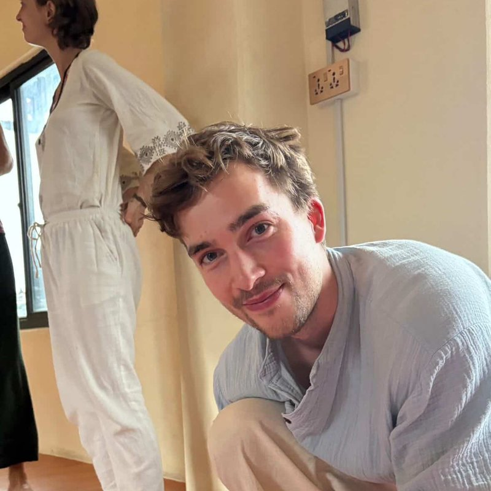

Breathe. Soften. Arrive.
Breathwork and yoga sessions, pranayama, hatha, yin, and more, held with care. No experience needed.

Why People Come Here
Some people find their way here because of something specific: stress from work that's crept into the rest of life, a body that never quite feels off duty, a pattern or a weight that thinking it through hasn't managed to shift. Others just have a sense that something in how they're carrying themselves could be lighter, without being able to say exactly what. Both are a fine reason to start.
This isn't a promise that breath can undo any of that by itself, life is more complicated than one session, and some of what you're carrying deserves more than breathwork alone. What I can say is that this is often where people notice the first shift, not in the story they tell themselves about their stress, but in the body that's been holding it: a jaw that unclenches, a breath that reaches further down than it has in a while, a bit more room to actually feel what's there instead of just managing around it.
If any of that sounds familiar, a Connected Breath Session is usually the easiest place to find out what that's like, no pressure, no fixing required, just space to breathe and see what loosens.
A 2023 meta-analysis of controlled trials found that breathwork measurably lowers stress, more on the research in the FAQ below.
Right Now
A few things currently in motion, updated as they come and go.
- Gift Vouchers for Christmas Give a session to someone who could use one. Takes a couple of minutes to request, the rest gets sorted directly with me. Request a voucher.
- Gift a Session Give someone a session, for a birthday, a hard season, or just because. Takes a couple of minutes to request, the rest gets sorted directly with me. Request a voucher.
- Breathwork Training, Level 1, Morocco December 3 to 10. I'll be assisting at this retreat rather than attending it myself as training, so in-person bookings that week are still limited. Get in touch and we'll find a time that works.
Welcome
I'm Justus, a certified breathwork practitioner and 500-hour yoga teacher. Connected breathing, pranayama, yoga, and meditation can all be held online or in person, whichever works for you. Rebirthing Breathwork is the one exception, it only happens in person, where I can hold and guide you directly through something that intense. Over the years that's grown into a fairly broad toolkit, connected breathing, rebirthing breathwork, pranayama, yoga, meditation, and a bit of bodywork and sound healing besides, and I bring in whichever of it actually fits what you need.
Read more about my background and training



Wherever You're Starting From
People arrive at this page from pretty different places. Some have never set foot on a yoga mat, some have a steady practice of their own already, and most are somewhere in between. None of that changes how I'll work with you, but it might change where's easiest to start.
You've never done yoga or breathwork before
That's completely normal, and nothing here assumes you've done any of this. A Connected Breath Session is usually the easiest place to begin, it needs no preparation and I'll explain everything as we go. The section just below, "What Breathwork Is," is written with exactly this starting point in mind.
You've done yoga, meditation, or something similar
You already know what it's like to sit with your own body and mind, so the breathing itself will likely feel more familiar than new. A Connected Breath Session or a round of pranayama are both natural next steps from where you are.
You already have a breathwork or dedicated yoga practice
Feel free to skip ahead to the Offers page, where Rebirthing Breathwork and the ten-session Transformation Series are built for people who are already doing the work.
What Breathwork Is
Breathwork means breathing with intention, in specific patterns, rather than however you'd breathe without thinking about it. That looks a little different depending on what you're doing: Connected Breath and Rebirthing Breathwork both use a continuous breath with no pause between inhale and exhale, Pranayama works through older, more structured patterns, and Yoga Nidra uses the breath mainly as an anchor into deep stillness. No prior experience or particular belief is needed, it works the same whether you're curious, skeptical, or completely new to any of this.
Stress and old patterns tend to settle into the body as held tension, a tight jaw, a chest that barely moves, shoulders that never quite drop. Slower, fuller breathing engages the vagus nerve, the body's main calming pathway, and signals to the nervous system that it's safe to loosen that grip. That's often the first thing people notice in a session, parts of the body softening that they hadn't realized were braced.
This has been studied directly. A 2023 meta-analysis of randomised controlled trials, published in Scientific Reports, found that breathwork measurably reduced self-reported stress, with slow paced breathing showing the clearest effect, linked to higher heart rate variability and increased activity in the parasympathetic nervous system, the body's rest and recovery mode (Fincham et al., 2023).
Things You Might Have Always Wondered About Breathwork
Does this actually help, is there research behind it?
Yes, on two levels. Directly, slow paced breathwork has been shown in randomised controlled trials to measurably reduce stress and raise heart rate variability, the research already cited above (Fincham et al., 2023). A separate randomised study found that a breathing based practice reduced PTSD and anxiety symptoms in military veterans, with effects still holding up a year later (Seppälä et al., 2014).
More broadly, trauma researcher Bessel van der Kolk's widely read book "The Body Keeps the Score" makes the case, backed by decades of clinical work, that stress and trauma live in the body as much as the mind, and that body based approaches, breath among them, can reach what talking alone sometimes can't. None of this is about rebirthing breathwork by name, but it's the same underlying territory, the body holding tension, and breath being one reliable way back out of it.
Is this part of something bigger?
Yes, it sits inside a much older and wider conversation. Pranayama in the yogic tradition goes back roughly 2,500 years, and similar breath-based practices run through Zen and Vipassana meditation and Taoist qigong. Yoga nidra, one of those older practices, is now also studied under the name NSDR (non-sleep deep rest) and works with much of the same nervous system territory as the Nervous System Reset session on the Offers page.
On the research side, a 2018 Trinity College Dublin study found a direct link between breathing and the brain's attention system, and a related review in the journal Frontiers in Human Neuroscience looked across the existing evidence on how slow breathing affects the nervous system, brain, and emotional state. James Nestor's bestselling book Breath and Patrick McKeown's Oxygen Advantage brought a lot of this into the mainstream, and Dan Brûlé, one of the original pioneers of modern breathwork, has been teaching within this same lineage for over fifty years. Teachers like Joe Dispenza have carried breath and meditation practices to an even wider audience. None of this needs to be memorized before a session, it's simply good company to be in if you like understanding the why behind the work.
Is it spiritual, or religious?
Not inherently. It works through the body and the nervous system, not through any particular belief. Whatever framework you already hold, spiritual or completely secular, tends to fit just fine.
What if I cry, shake, laugh, or feel something intense?
All of that is normal, it shows up most often in deeper practices like Rebirthing Breathwork, but it can happen in any session. Emotion and physical release often move through the body together, and you're held and paced throughout, never pushed further than feels right.
Do I need to be flexible, fit, or already experienced?
No. Most of it is done lying down or seated. The breath does the work, not your body.
What physical sensations might come up?
Some people notice tingling in the hands or lips, a little lightheadedness, or brief stiffness in the hands during the more intense techniques, your body adjusting to breathing in an unfamiliar way. It's well understood, it passes quickly, and it's never a sign that something's wrong. I walk you through exactly what to expect before we start, and I'm with you the whole time, so nothing catches you off guard.
How is this different from meditation?
Meditation mostly works by observing the mind as it already is. Breathwork actively shifts your physiological state first, body before mind, which is part of why it often feels faster and more immediate.
Can it replace therapy or medical treatment?
No, and I'll never suggest it should, it isn't about choosing one over the other. It sits well alongside therapy or medical care, just not in place of either.
I come from a medical or psychological background, what should I know?
Mechanistically, slow paced breathwork works by increasing vagal tone and heart rate variability, shifting the autonomic balance toward parasympathetic activity, the same pathways referenced in the research above. I don't diagnose, treat, or interfere with any existing medication or care plan, and I'm glad to coordinate with a treating clinician or therapist if that's useful. If you have questions about a specific client, patient, or condition, feel free to reach out directly.
How a Session Feels
Sessions are held in person or online depending on the practice, one-on-one or in small groups. We start by settling in together, move through breath and body, and close with space to simply rest and feel whatever is there. Nothing is forced, you're guided at your own pace.